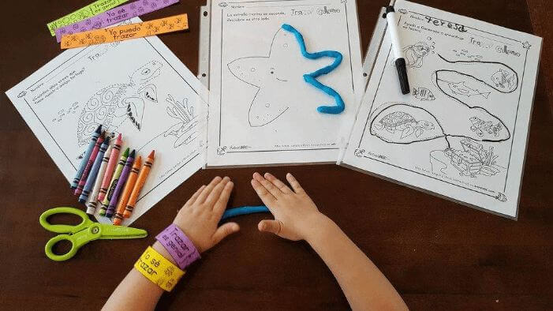

NIVEL INICIAL
Manualidades prácticas
En un jardín de infantes, es esencial proporcionar actividades prácticas educativas que sean atractivas y estimulantes para los niños pequeños. Estas actividades ayudan a desarrollar sus habilidades cognitivas, sociales y emocionales de una manera divertida y creativa. Aquí hay un párrafo con algunas actividades prácticas y consejos para trabajar en un jardín de infantes: "En un entorno de jardín de infantes, las actividades prácticas educativas desempeñan un papel crucial en el desarrollo integral de los niños pequeños. Algunas actividades efectivas incluyen la lectura en voz alta de cuentos interactivos que fomenten la comprensión lectora y la imaginación, la creación de manualidades que promuevan la creatividad y la destreza motora fina, y la exploración de la naturaleza a través de paseos al aire libre para estimular la curiosidad y la conciencia ambiental. Además, es importante promover actividades de juego cooperativo que ayuden a desarrollar habilidades sociales, como compartir y comunicarse. Para maximizar la eficacia de estas actividades, aquí van algunos consejos:
- 1- Sea flexible y permita que los niños elijan las actividades que les interesen.
- 2- Fomente la comunicación abierta y escuche activamente sus ideas y preguntas.
- 3- Proporcione un ambiente seguro y estructurado para que puedan explorar con confianza.
- 4- Asegúrese de que las actividades sean apropiadas para su nivel de desarrollo.
- 5- Celebre los logros y el esfuerzo de cada niño, fomentando una autoestima positiva."